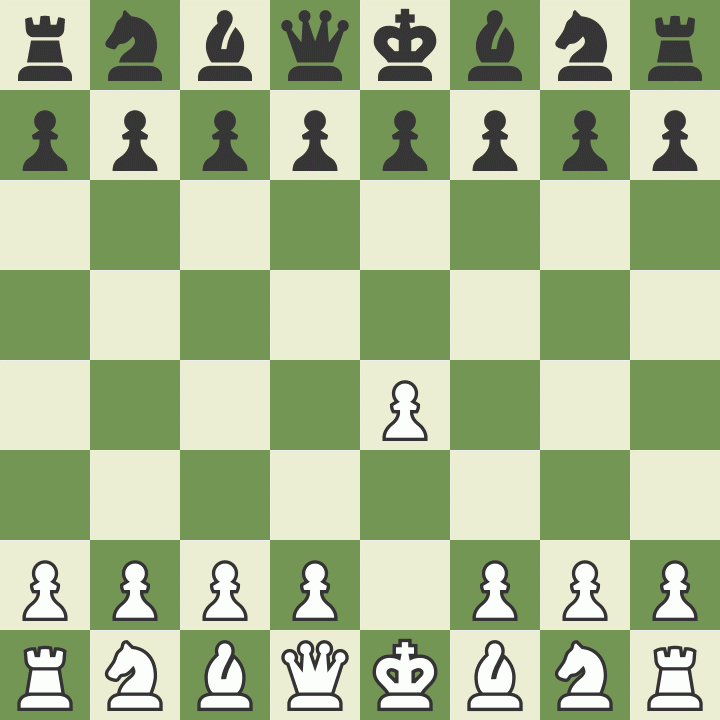
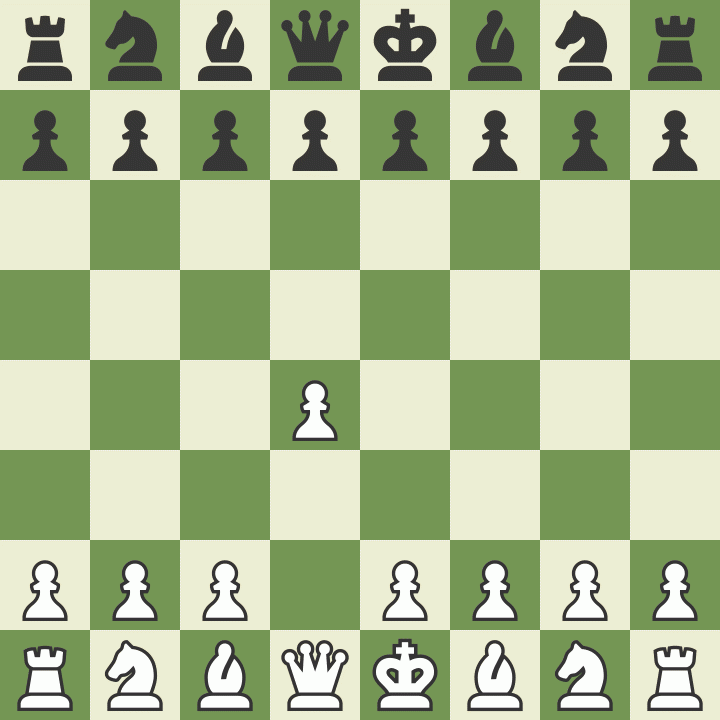

Despite losing a historic match to the computer engine Deep Blue two years earlier, Garry Kasparov was at the height of his powers in 1999, winning tournaments by big margins and recording the highest Elo rating ever at that time (2851). Kasparov has a long list of brilliancies to his credit, but this game is his virtually undisputed masterpiece.
Kasparov vs. Topalov is everything a chess game should be, a ferocious fight with brilliance from both players, numerous tactical themes, and a king hunt that drives the king all the way from one side of the board to the other! It's difficult to imagine any other game atop this list, but we eagerly await new contenders in the coming years.
"This game dazzles me from beginning to end. 24. Rxd4!!, 25.Re7+!!, and 36. Bf1! all inspire, and these are only the moves that appeared on the board. The variations that stayed behind the scenes are just as vibrant as the game itself." — @SamCopeland
Often called the "Opera Game," Paul Morphy's informal masterpiece played against the Duke of Brunswick and Count Isouard is the first complete game shown to many beginning and intermediate players. It illustrates the value of development, centralization, and king safety, but most important, it is the perfectly concise game to illustrate the beauty of chess. What chess player can fail to smile at 10.Nxb5!, 13.Rxd7!, and 16.Qb8+!!?
Morphy won this game in the midst of his European Tour where he easily defeated the other great players of his day before virtually retiring from chess to pursue law in New Orleans.
"I really think it’s the game we all wish we could play—giving up pieces one after another, reaching a crescendo with a queen sacrifice before ending it all. There’d be no purpose to studying chess if learning its secrets didn’t give one the ability to astound or crush an opponent. The Opera Game, which I learned about when I started chess, was a promise. It proved to me that the game was worth studying, because if I did, someday I might be able to play a game like that too." — @Shaun
Undisputed world champion from 2007 to 2013, Viswanathan Anand is one of the most fluid and intuitive players in chess history. Where Jose Capablanca's intuition served him best in the endgame, Anand's serves him best in the middlegame.
Played in advance of his coming 2013 world championship match against Magnus Carlsen (though Carlsen would not qualify for several months), Anand showed in this game the attacking skill that makes him such a beloved player; particularly 16...Nde5!! sticks in the memory as Black's pieces burst forth and cannot be contained.
"Despite being relatively short, this modern beauty played at the absolute top level contains multiple counterintuitive tactics. Anand himself considers it one of his best games ever." — @PeterDoggers